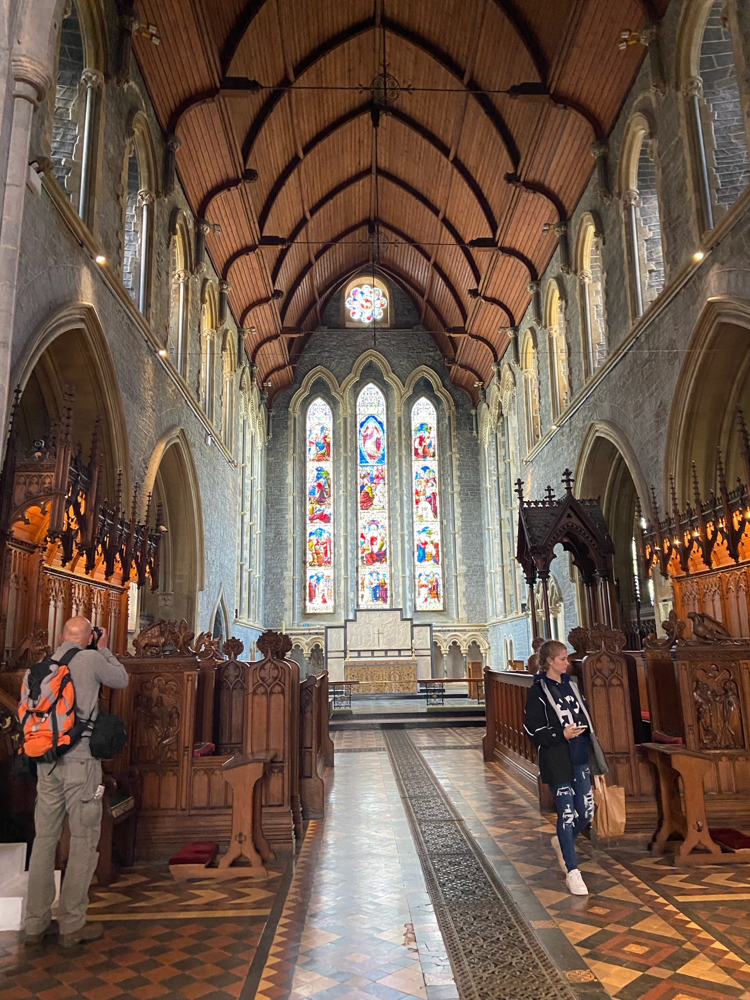
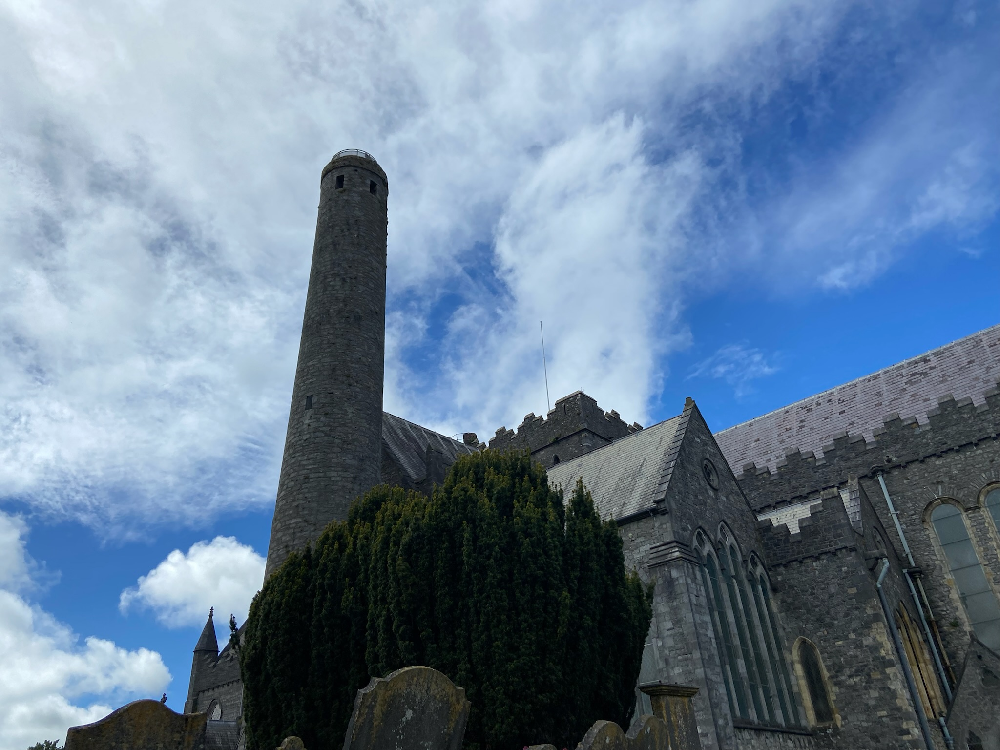
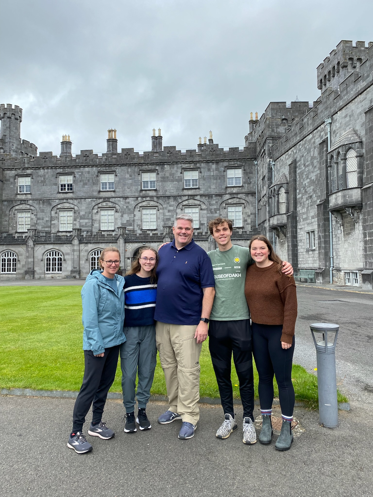
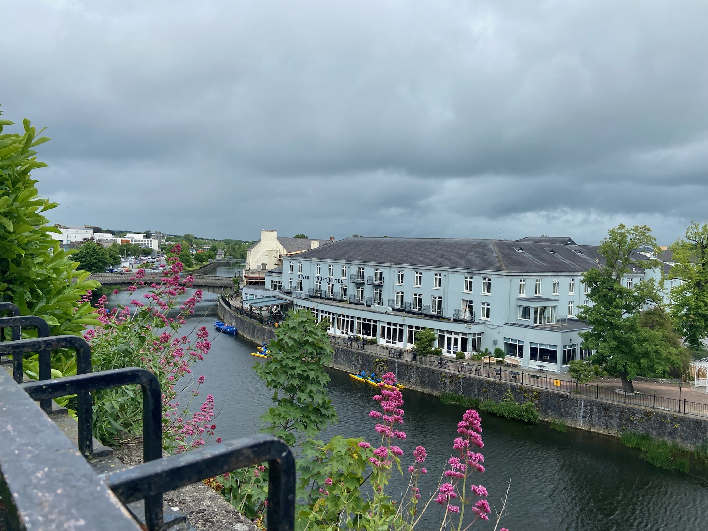
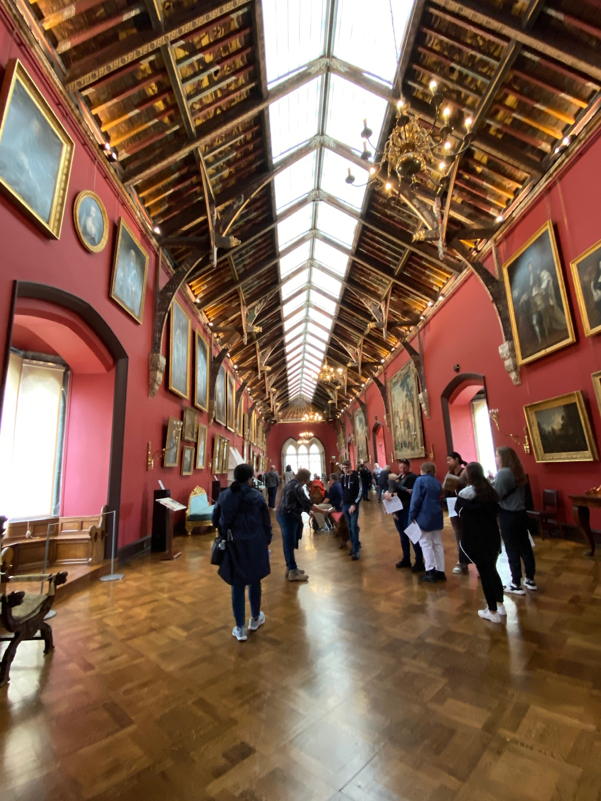
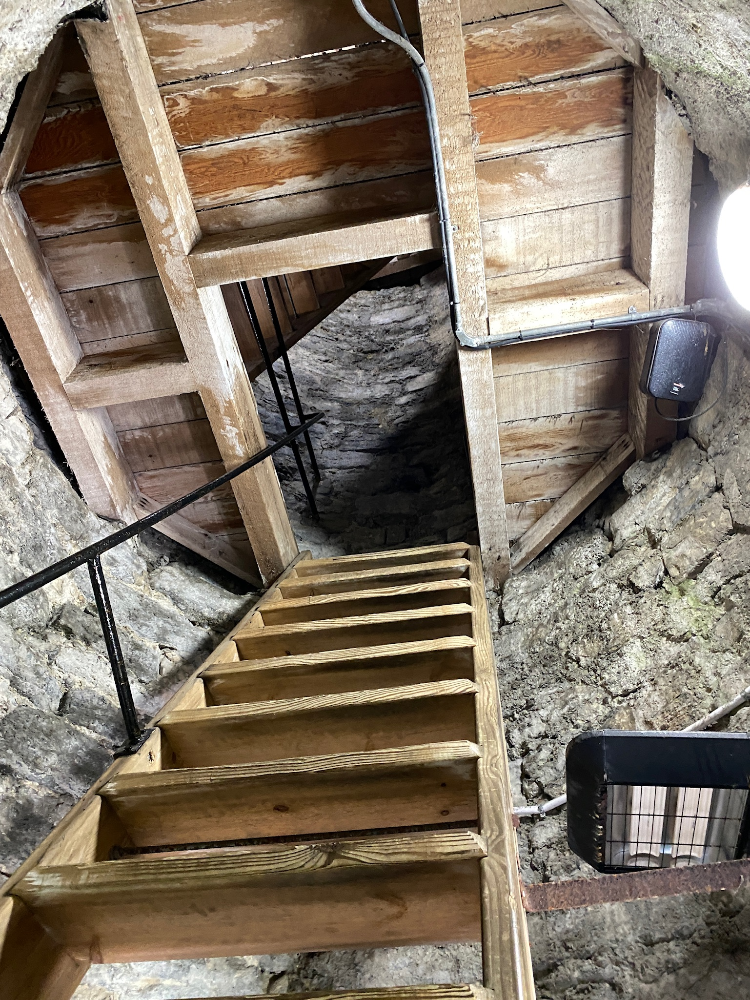
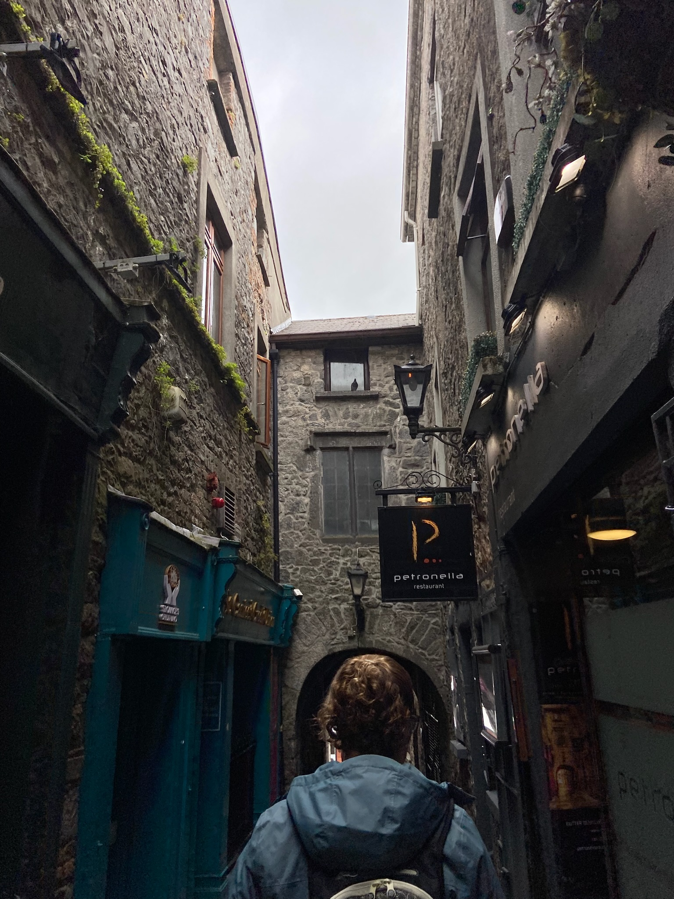
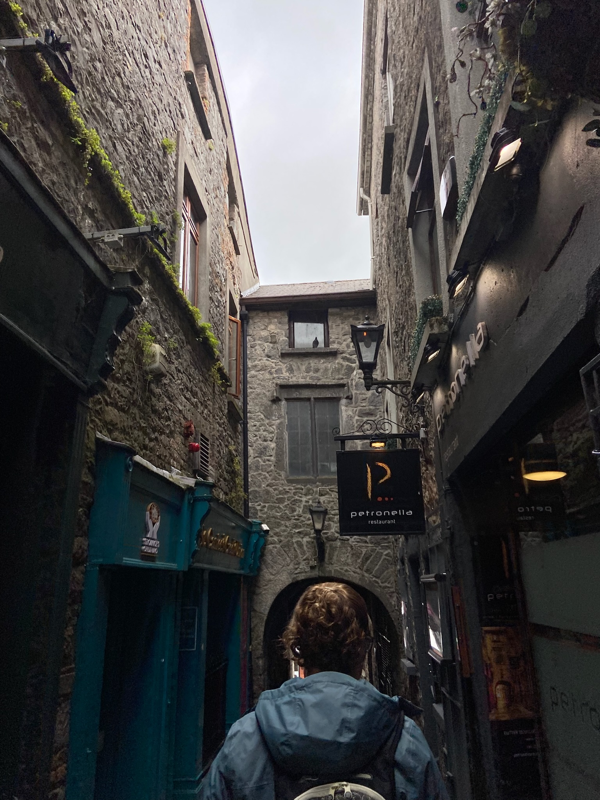

On the third day our group departed to Kilkenny. After arriving we went to Kilkenny Castle, shown in the second picture. It was a cool castle (the ceiling is the third extra photo), but the best part was the garden and river (second extra pictrue).
Next, we traveled to St. Canice's Cathedral. The architecture of every church/cathedral I've visited in Europe has been so impressive, and this was no exception. The stone masonry was very impressive and the stained glass was beautiful. However, the cathedral wasn't the main attraction of being here.
The actual main attraction was the Round tower! Standing at 100ft tall, the tower was used as a watch tower to protect from Viking raids in the 8th century. I got to climb up to the top and look out myself. It was 7 floors of very small ladders (fourth extra photo). At the top (fifth extra photo) you could see the entire city and more.
     
